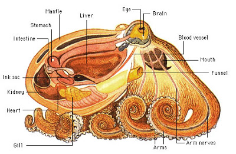
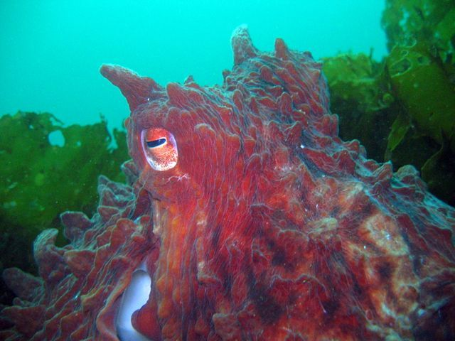

$35.00
This is the Giant Pacific Octopus plush toy! This “little” guy represents all octopus species of larger proportions in size, weight and life! These cephalopods lurk the sea floors and greater depths of the ocean. They are composed of the various attributes of a normal octopus, BUT they are really BIG, like the same or bigger than the size of a 6 foot human! (That’s larger than life itself!). Unfortunately there is little research about the population and rarity of the Giant Pacific Octopus, and we are not even sure if they are endangered… Your donation by buying this plush toy will go straight to foundations dedicated to researching more about these GIANT octopuses (the plushy is ironically small)!
Scientific Name: Enteroctopus dolfleini | Common Name: Giant Pacific Octopus
Just like the other octopuses, the Giant Pacific Octopus has eight limbs, which are attached directly to their head. They are invertebrates, which means they have no bones. This allows them to stretch to reach and grab distant objects underwater, or squeeze into tiny spaces. According to Alina Bradford, the Giant Pacific Octopus also has a hard beak underneath their bodies which allows them to eat other animals. However, due to the beak’s hard material, this acts as a limiter on how small the space that an octopus can occupy (they can only fit in spaces larger than the beak size). Another general fact about the octopus is that they have three hearts! One main heart that pumps blue blood throughout the circulatory system, while the other two pumps blood to the gills.
The Giant Pacific Octopus is a type of octopus species that is known for their average large sizes, weight and their longer life spans. According to National Geographic, their average size is 9.75 to 16 feet with a weight between 22 to 110 pounds! They’re almost as big as a 6 foot tall human being! Moreover, this species of octopus can lives between 3 to 5 years. According to National Geographic, the largest and heaviest octopus seen was 30 feet in size and 600 pounds in weight!
The Giant Pacific Octopus lives underwater in the Pacific Ocean, where they usually thrive in temperatures around 8-12 degrees Celsius (they prefer colder waters). The use their tentacles, suckers (found beneath their tentacles), and funnels to move underwater. Because they are carnivores, when they go for night hunting, they prey on small creatures such as shellfishes, fish, and/or larger animals such as small sharks and even birds!.
Like other Octopuses, the Giant Pacific Octopus has several biological features that allows them to adapt and thrive in their environment. These creatures has the ability to change in colour and texture that mimics their surroundings! For example, if an octopus was trying to hide, they can see (using their human-like vision) and copy the surface they rest upon to hide and camouflage themselves from predators. They can change from a smooth and shiny texture, to a rough and rocky “looking” epidermis!
Another adaptation is their use of a combination of inks and jets to escape from their enemies. The inks squirt out from their body as a natural reaction for their fight-or-flight system, and use the black substance to confuse their enemy by blocking their vision underwater. The octopus can then squirt out powerful jets from their siphons to propel themselves in the water and swim away quickly. If none of these work, they octopus can squeeze their soft bodies into hard-to-reach places where predators cannot reach them!
Although the Giant Pacific Octopus and octopus alike are intelligent, they suffer to predators just like other animals in the wild. Baby octopus larvae are usually eaten by zooplankton and other creatures that feeds on these small animals. More specifically, the Giant Pacific Octopus is usually hunted by animals larger than them such as seals, otters and sperm whales. Of course, humans also hunt these creatures on a regular basis as a food source.
There is not much known about the scarcity of the Giant Pacific Octopus and other octopuses. According to National Geographic, the “red list” status of the octopus (indicating their level of endangerment), is “unknown”, which means we need more research about these animals. They are highly susceptible to pollution as well. Therefore, we need your donations to provide resources that enables scientists, researchers, and marine lovers-alike to find more about the potential rarity of the Giant Pacific Octopus and other cephalopods.
For more information about the Giant Pacific Octopus, come check out this video !